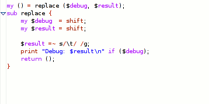

Extraction of subroutines is supported by the use of the CPAN Devel::Refactor module.
To extract a subroutine, mark the code to extract and select → from the popup menu.

In the popup menu insert the name of the new subroutine and press Enter.

The new subroutine will be placed at the end of the Perl script (before __END__ section) and the selection will be replaced with the subroutine
call.

Note
The extraction might not work properly at the moment because the Devel::Refactor module is in an early stage of development. With upcoming versions of the module, this function should become more reliable.